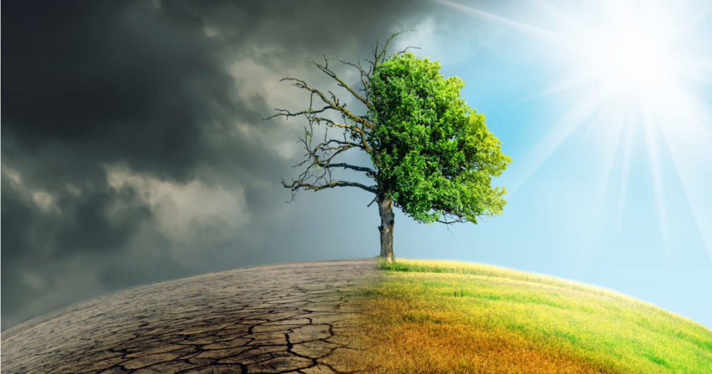

El cambio climático hace referencia a los cambios a largo plazo de las temperaturas. Estos
cambios pueden ser naturales, pero desde el siglo XIX, las actividades humanas han sido el principal
motor del cambio climático, debido principalmente a la quema de combustibles fósiles, como el carbón, el
petróleo y el gas, lo que produce gases que atrapan el calor.
Gran parte de nuestra electricidad y calefacción funciona con
carbón, petróleo y gas.
Utiliza menos energía reduciendo la calefacción y el aire acondicionado, cambiando a bombillas LED. Las
carreteras del mundo están saturadas de vehículos, la mayoría de los cuales usan diésel o gasolina.
Caminar o ir en bicicleta en lugar de conducir reduce las emisiones de gases de
efecto invernadero, y
supone un beneficio para la salud y la forma
física.